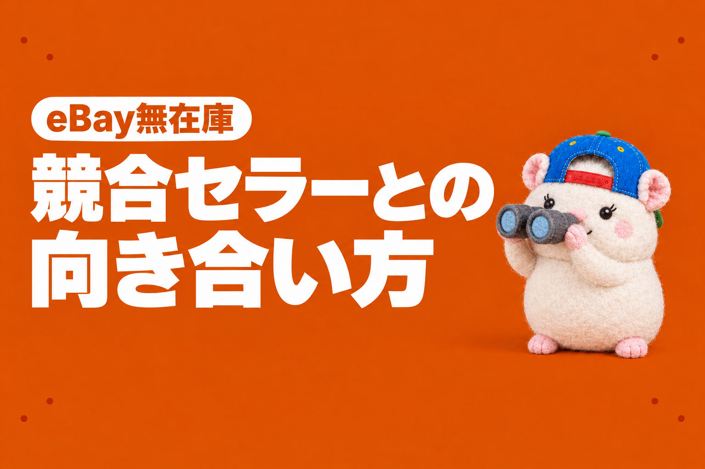

9月29日から、うちの主力の品が、ほとんど売れなくなりました。
それまでは週4〜6件。
そこから12日間で、1件です。
最初に疑ったのは「設定が変わった?」でした。
値段、送料、返品の条件、広告、出品の書き換え。
ぜんぶ調べました。
何も変わっていませんでした。
変わっていたのは、競合でした。
同じ商品を出すお店が、急に増えていたんです。
そして、気づくまでに2週間かかりました。
これがいちばんの反省です🐹
やることは3つだけにしました。
決めた利益までは戦う。
それより下は追わない。
相手が出てきたら、すぐ気づく。
何が起きていたか
まず、どこで落ちたのかを分けました。
eBayは国ごとにサイトがあります。
Amazon.co.jpとAmazon.comが別なのと同じです。
落ちていたのは、ebay.com(アメリカのeBay)に出している主力の品だけでした。
同じebay.comでも、ほかの種類の品は売れていました。
ほかの国のeBayでも、同じ期間に週4件くらい売れていました。

出典: eBayの注文データを、出品したサイト別に週ごとに数えて書き出したもの(キャンセルは除く)
しかも、見られている数は減っていません。
1日約700回、ずっと横ばいです。
つまり、見られているのに、うちで買われていない。
ここで、値付け担当と営業企画担当に、同じ商品を出しているお店を数えてもらいました。
日本から、うちと同じ型番を新しく出した数は、10日あたり約230件でした。
それが9月21日〜30日は406件。
10月1日〜10日は534件。
9月27日には、1つのお店が1日で137件を出していました。
うちが売れなくなったのは、その2日後からです。
競合には3つの型がある
調べると、相手は3つの型に分かれました。
A: 同じ仕入先の、同じ個体を出しているお店
写真がまったく同じです。
ある1つのお店は、688件のうち352件が、うちと同じ写真でした。
無在庫なので、売れたほうが仕入先から買います。
相手で売れたら、うちの出品は在庫切れになります。
早い者勝ちです。
ちなみに、この相手の1人は、ぼくが以前この仕入先を教えた友人でした。
まねされたわけではありません。
同じ仕入先を見ていれば、同じ商品にたどり着きます。
B: 仕入先は違うけれど、同じ商品を出しているお店
フリマアプリから仕入れるお店。
アメリカ国内の個人。
1日に何百件も出す業者。
C: うちの出品を、まるごとまねるお店
以前eBayをやっていたときは、これも出ました。
うちの出品を、ほとんどそのまま写した出品です。
写真は仕入先のものなので、写真では見分けられません。
タイトルと説明文で見分けます。
土俵はばらばらです。
でも、お客さんから見れば、どれも同じ商品です。
だから、やることも同じにしました。
戦い方は3つ
①決めた利益までは、値段で戦う
うちの最低ラインは、利益5%、かつ1,500円。
そこまでは、相手より1ドル安くします。
見回りは1日2回にしました。
調べてわかったことがあります。
値付け担当の見回りが、9月16日から店の半分で止まっていました。
約6,200件のうち、毎回約3,000件で終わっていたんです。
それに、一番安い出品が最低ラインより下の安物だと、そこで追うのをやめていました。
その後ろにいる、同じ個体の相手を見ていなかったんです。
同じ個体で相手のほうが安かった165件のうち、約120件はこの見落としでした。
いまは全件を見て、最低ラインより上の相手には勝ちにいきます。
②値段以外で選ばれるようにする
見られている数が多い品から順に、こうしていきます。
- 値下げの相談(Best Offer)を受けつける
- 1枚目の写真を、相手と違うカットにする
- 商品の項目(Specifics)を、相手より1つ以上多く入れる
- 説明文を、くわしく読みやすくする
- お店の評価を、説明文の中で伝える
ひとつ注意があります。
eBayのルールでは、商品の写真に文字や宣伝を足すのは禁止です。
お店の評価や特徴のまとめは、写真ではなく説明文に入れます。
出典: eBay公式「画像に関するポリシー」(実際の画面)
③それより下は、追わない
残りの38件は、相手が最低ラインより安く売っていました。
差の正体は送料です。
相手は安くて遅い送り方(お届け3日〜3週間)。
うちは速い送り方(6〜8日)。
ここは、深追いしません。
出品はそのまま残して、ほかの品で勝ちます。
いちばん大事なのは、気づくこと
相手の型がどうであれ、やることは同じ。
だから、どんな型の相手でも、出てきたことに気づけるかがすべてです。
気づかないと、「なんか最近売れないな」で素通りしてしまいます。
ぼくは2週間、素通りしかけました。
いまは、見張り担当が毎日3つを見ています。
- 売れ方の異常: いつものペースより明らかに少ないか
- 新しい競合: うちと同じ商品を、急にたくさん出したお店はないか
- 同じ個体・丸パクリ: うちと同じ写真や、そっくりのタイトルの出品が、新しく出ていないか
試しに、過去にさかのぼって当ててみました。
今回の件なら、10月3日に「4日間で0件(いつもなら3件ちょっと)」と知らせが鳴っていました。
実際に原因にたどり着いたのは、10月12日です。
9日早く気づけた計算です。
出典: 見張りの仕組みを過去の日付で動かした結果を、表に書き出したもの
まねできる手順: 売れなくなったら確かめる5つ
「売れない」と感じたら、この順に確かめてみてください。
- どこで落ちたか: 国(サイト)ごと、商品の種類ごとに分けて数える
- 見られている数は落ちたか: 落ちていないなら、選ばれていない
- 自分で何か変えたか: 値段・送料・返品・広告・出品の書き換えの履歴
- 同じ商品の出品数は増えたか: 日本から同じ型番を新しく出した数を、10日ごとに比べる
- 同じ写真・そっくりの文章の出品はないか: 同じ写真なら同じ仕入先の相手。文章まで同じなら丸パクリ
ぼくはこの5つを、AI社員に毎日やってもらっています。
AIで自動化するかどうか、どこまで任せるかは、各サービスの規約を確認したうえで自己責任でお願いします。
うちのeBayまわりは、eBay Japanに問い合わせて、書面で答えをもらった範囲で動かしています。
打ち手は、考え方で変わる
競合への打ち手は、ほかにもあります。
売れ筋は在庫を持つ。
買い取りを始める。
仕入先を開拓する。
どれも正解です。
どれを選ぶかは、eBayにどこまで手をかけて、どこまで伸ばしたいかで変わります。
ぼくの方針は決まっています。
AIと無在庫で、月10〜30万円を、手をかけずに稼ぐ。やらない理由がない。
在庫を持つやり方は、9月に少し試して、やめました。
ぼくの方針には合わなかったからです。
だから、ぼくの打ち手は3つだけです。
決めた利益までは戦う。
それより下は追わない。
そして、相手が出てきたら、すぐ気づく。
あなたのeBayは、どこまで手をかけて、どこまで伸ばしたいですか?
そこが決まると、競合への向き合い方も決まります。
▼中の人🏠(レンタルスペース23部屋・売上1.5億)のレンスペ実録

▼ブログ(eBay×レンスペ、全記事まとめ)

▼この店のやり方は、ぜんぶ1冊にまとめてあります
リサーチ・出品・値付け・顧客対応まで、初月利益10万4,286円を出した実店舗の記録と手順を全部書いた教科書です。
読んだその日から、AI社員の作り方をそのまま真似できます。
『AI × eBay輸出の教科書 — 梱包以外、ぜんぶAI』


🎁 2026年10月22日に第3版になりました。顧客対応 完全自動化ツール・ストアドクター・AI自動化コーチなど付録6つは、これまでに買った人も含めて購入者全員に無料で受け取れます。
内容・最新価格は販売ページをご確認ください。